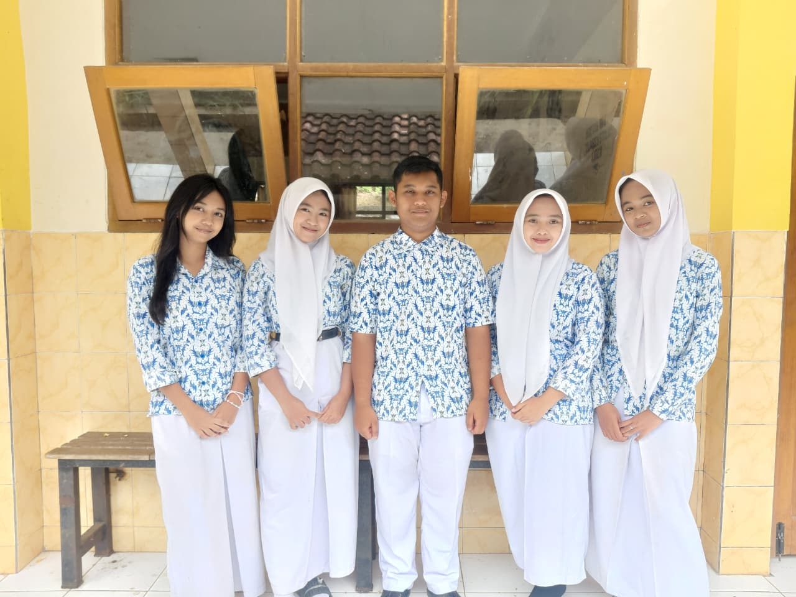

PROFIL KAMI
Tentang Website
Website ini dibuat sebagai media informasi mengenai Kali Kebo Camping Ground yang berada di kawasan Pronojiwo, Kabupaten Lumajang, Jawa Timur. Website ini memperkenalkan daya tarik wisata dan memberikan informasi kepada pengunjung yang ingin mengenal destinasi wisata lebih dekat.
Tujuan Website
- Memberikan informasi mengenai Kali Kebo Camping Ground.
- Menampilkan foto dan dokumentasi keindahan wisata.
- Memudahkan pengunjung mencari lokasi wisata.
- Menyediakan layanan ulasan dan buku tamu bagi pengunjung.
Identitas Pembuat
Nama:
- Adistia Risa Pratiwi
- Bunga Filosofi Ranai Fahlevi
- Rasya Rafi Ardiansyah
- Tiara Aurora Kirana Risqi
- Yuliva Alivia

Kelas: XI RPL 2
Jurusan: Rekayasa Perangkat Lunak